|
Framework ISE |
|
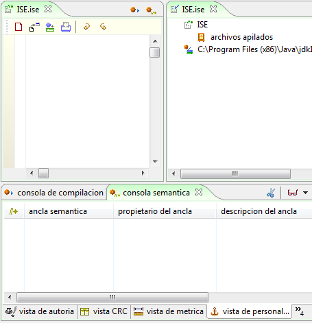 Figura 1. Marco del ambiente semántico ISE En el Marco de Presentación se muestra, en forma jerárquica, la información relacionada con el proyecto actualmente abierto, a través de un árbol que se despliega para mostrar los archivos relacionados y los componentes del código en edición. 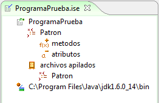 Figura 2. Vista detallada del ambiente semántico Para expandir la Semántica de la Clase, el Framework ISE insertar etiquetas especiales en el código del editor. Dependiendo del tipo de etiqueta, esta captura información asociada a diferentes contextos de la clase como pueden ser: Nombre, Autor, Versión de la Clase, Tipo de Clase, patrones presentes utilizados, antipatrones identificados, condiciones y post condiciones etc. 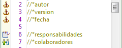 Figura 3. Anclas semánticas
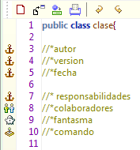 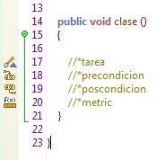 Figura 4. Anclas semánticas en código Consola Semántica: Ubicada en el Marco de Extensión, permite expandir y documentar el código fuente a la vez que muestra información resumida de la clase. 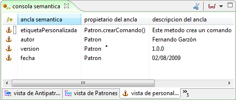 Figura 5. Explorando las anclas semánticas en la consola semántica La consola semántica está compuesta por varias vistas especializadas en diferentes ámbitos: Las vistas incluidas dentro del framework son: • Vista de autoría: Presenta Información asociada con el origen de la Clase: Autor Versión Fecha de Creación: 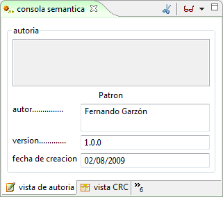 Figura 6. Consola Semántica • Vista CRC: Permite reconstruir una tarjeta CRC de la clase mostrando Responsabilidades y Colaboraciones. 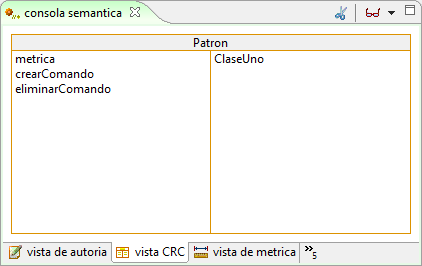 Figura 7. Vista CRC • Vista de Tareas: Describe tareas a realizar por los diferentes módulos de la clase. 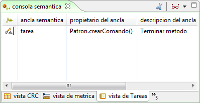 Figura 8. Vista de tareas • Vista de Aserciones: Resume las aserciones realizadas en toda la clase, Precondiciones, Invariantes y Post condiciones. 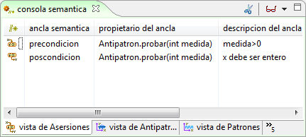 Figura 9. Vista de asersiones • Vista de Antipatrones: Resume los antipatrones identificados en la clase. 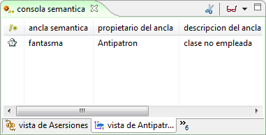 Figura 10. Vista de antipatrones
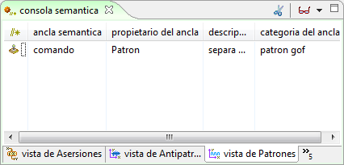 Figura 11. Vista de patrones
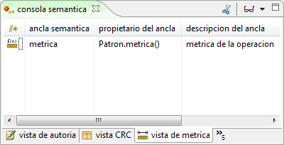 FIgura 12. Vista de Métricas • Vista de Personalización: Resume la Información contenida en anclas semánticas personalizadas, como se muestra en la Figura 13. 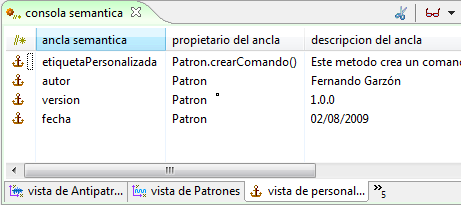 Figura 13. Vista de personalización Codificación y Compilación: La compilación y codificación de código se apoya en el Compilador y Editor de Código integrados en el ambiente. Para más información sobre estas dos características vea Framework IPE. 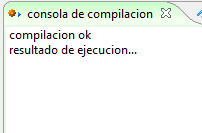 Figura 14. Compilación y codificación en el ambiente ISE
|